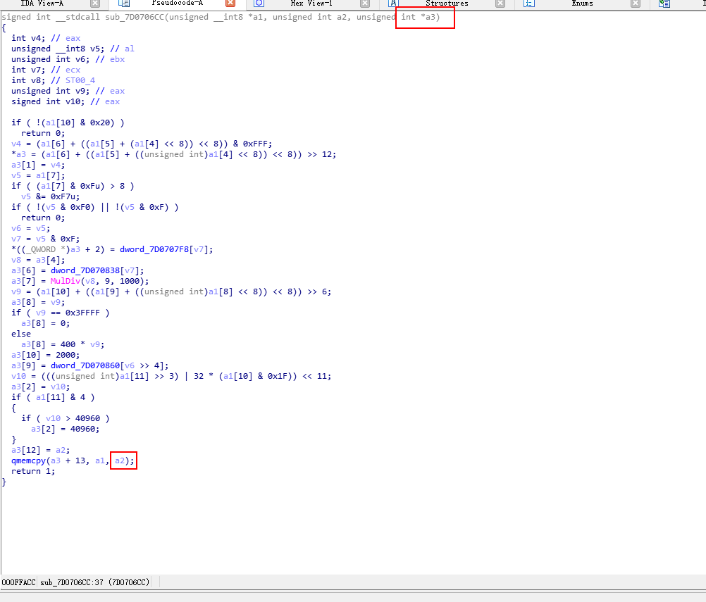

0X00： 漏洞描述
exploit-db 漏洞公布站点上发布了 QQplayer.exe 3.7.892 m2p quartz.dll Heap Pointer OverWrite PoC，后被人提交至乌云。这个漏洞与 QQplayer.exe 没有任何关系
CVE-2013-0077是系统的quartz.dll在解析.m2p文件头时没有限制数据的大小 导致复制的数据超出了申请的栈空间
0X01： 分析环境
目标系统：Windows XP SP3
调试器：WinDbg
反汇编器：IDA Pro
漏洞软件：qqplayer
0X02：基本信息
首先开启堆页保护
然后用WinDbg附加进程 并打开poc.m2p文件 发现断在了7d0707e0
重新打开WinDbg 附加进程 下断点
运行后断在了断点处 查看esi和edi中的内容
发现ecx的值为0x30 edi的值为02860f64
则循环复制的次数就是0x30
然后先bd 0禁用第一个断点 运行查看esi的值为02861000
我们得到当前堆块分配的大小为0x9c
查看栈回溯发现断点函数来自7d0706cc
然后用IDA分析 加载quartz.dll 找到7d0706cc 查看反汇编代码然后找到漏洞处
查看memcpy的函数原型
对应IDA中的函数可知 a2的值并未改变 是从函数中传过来的 是函数的第三个参数

我们用x32dbg加载程序 在7d0706cc设置断点 并打开poc 发现栈中的第三个值为0xc3 即函数的第三个参数的值为0x3c 即a2的值为0xc3
由此得出 我们之前直到堆空间只有0x9c的大小 而这里调用的memcpy函数却复制了0xc3的值造成了溢出
0X03：漏洞修复
我们查看win7下的quartz.dll 用bindiff分析两个函数的对比
然后查看该dll文件的76038668函数 发现该系统下的第三个参数的值已经被改为140 从而无法溢出